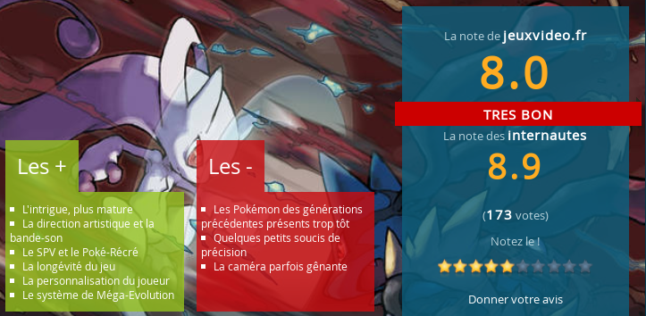

Pokemon X & Y

Résumé
Nouvelle génération de pokémons et nouveaux environnements entièrement en 3D pour Pokemon X et Pokemon Y qui doivent servir de base à toute une gamme de nouveaux dessins animés, cartes à collectionner et jouets.
Information
Sortie :
12/10/2013
Plateformes :
Nitendo 3DS
Genre :
Aventure | Action
Développeur :
Game Freak Entertainement
Editeur :
Nitendo